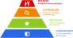

Traitement Informatique
des Donnees
Bonjour
la dernière fois :
aujourd’hui :
utiliser les données
pour prendre des décisions

Dernier niveau
de notre progression.
on ne veut pas seulement analyser
on veut choisir
Aujourd’hui :
on va chercher la “meilleure” solution
Les données
ne servent pas
uniquement
à comprendre le monde.
Elles servent aussi
à prendre des décisions.
Que faut-il faire ?
A. Acheter un nouvel ordinateur.
B. Augmenter tous les prix.
C. Analyser les données avant de décider.
D. Ignorer le problème.
seul dans l’univers ?Des milliers de personnes
affirment avoir vu
un OVNI
| date | ville | pays | forme | durée (s) |
|---|---|---|---|---|
| 10/10/1965 | Penarth | GB | cercle | 180 |
| 10/10/1970 | Bellmore | US | disque | 1800 |
| 10/10/1979 | San Diego | US | ovale | 180 |
| 10/10/1988 | Milwaukee | US | triangle | 600 |
| 10/10/1993 | Zlatoust | RU | sphère | 1200 |
| 10/10/1998 | Las Vegas | US | cigare | 600 |
Plus de 80 000 observations
avec des dates, des lieux,
des formes, des durées
et des témoignages.
Mais que fait-on
de ces réponses ?
Une organisation dispose du budget
pour envoyer une seule équipe d’enquête.
Où doit-elle aller ?
dans la ville avec le plus de signalements ? là où les observations durent le plus longtemps ? là où les témoignages sont les plus récents ? là où plusieurs critères semblent intéressants ?
Les données ne donnent pas
directement une décision.
Il faut choisir
ce qui compte.
définir un objectif choisir des critères comparer plusieurs possibilités accepter des contraintes
Aujourd’hui,
nous allons utiliser le tableur
pour passer des données
à une décision.
Un petit quiz
Une équipe doit enquêter sur les observations d’OVNI.
A. Le nombre de lignes du tableau
B. La ville ayant le plus de signalements
C. La durée moyenne des observations
D. Aucune information ne suffit toujours à elle seule
Il faut d’abord :
A. choisir un objectif
B. utiliser VLOOKUP
C. supprimer les petites valeurs
D. ajouter toutes les colonnes
Le Nevada.
Une enquête coûte
650 €
Budget disponible :
5 000 €
Combien d’enquêtes
peut-on financer ?
=5000 / 650
7,69 enquêtes
En pratique :
7 enquêtes.
Le directeur nous dit :
“Je veux réaliser
exactement
12 enquêtes.”
Nous connaissons
le résultat souhaité.
Mais nous ne connaissons plus
le budget nécessaire.
Quel budget
faut-il prévoir ?
7000 €
↓
10,8 enquêtes
7500 €
↓
11,5 enquêtes
7800 €
↓
12 enquêtes ?
On pourrait essayer…
encore…
et encore…
Valeur cible
Habituellement :
on calcule le résultat.
Valeur cible fait l’inverse.
Je connais :
Je cherche :
Trouvons
le budget nécessaire.
Elle modifie automatiquement
une cellule
jusqu’à obtenir
le résultat demandé.
Valeur cible
ne peut modifier
qu’une seule variable.
Et si plusieurs décisions
devaient être prises ?
Pour une seule variable,
Valeur cible
est l’outil idéal.
Finalement,
une seule équipe
ne suffira pas.
| Zone | Enquêtes |
|---|---|
| Texas | 0 |
| Californie | 0 |
| Nevada | 0 |
| New York | 0 |
| Zone | Coût | Succès | Heures |
|---|---|---|---|
| Texas | 500 € | 70 % | 8 |
| Californie | 650 € | 85 % | 10 |
| Nevada | 800 € | 95 % | 12 |
| New York | 550 € | 60 % | 7 |
Budget :
10 000 €
Temps disponible :
120 heures
Nombre d’équipes limité
Obtenir
le plus grand nombre
d’enquêtes réussies.
Non.
Il faut modifier
plusieurs cellules
en même temps.
Le Solveur
Le Solveur cherche automatiquement
les valeurs des variables
qui donnent
le meilleur résultat.
tout en respectant
les contraintes.
🎯 un objectif
🔧 des variables
🚧 des contraintes
🎯 Maximiser
le nombre d’enquêtes réussies
🔧 Variables
nombre d’enquêtes
dans chaque zone
🚧 Contraintes
budget ≤ 10 000 €
temps ≤ 120 h
Le Solveur
essaie
des milliers de combinaisons.
Puis conserve
la meilleure.
Résolvons
le problème.
| Zone | Enquêtes |
|---|---|
| Texas | 5 |
| Californie | 3 |
| Nevada | 2 |
| New York | 4 |
Cette répartition
respecte les contraintes
et maximise l’objectif.
Le Solveur
ne décide pas
à notre place.
Il applique
les objectifs
que nous avons choisis.
Valeur cible
cherche une valeur.
Le Solveur
cherche
la meilleure solution.
Mission accomplie ?
Le Solveur ne sait pas
ce qui est
“une bonne décision”.
résoudre
le problème
que nous lui avons donné.
Avant :
Maximiser
le nombre d’enquêtes réussies.
Après :
Minimiser
le coût total.
Même problème.
Même données.
Objectif différent.
👉 Solution différente.
Budget :
10 000 €
↓
6 000 €
Temps :
120 h
↓
80 h
Les contraintes
font partie
du problème.
Les humains
choisissent
les objectifs
et les contraintes.
Le Solveur
fait ensuite
les calculs.
organiser des livraisons
planifier des emplois du temps
gérer un budget
choisir un itinéraire
produire de l’électricité
concevoir un avion
entraîner une intelligence artificielle
Il y a toujours
un modèle.
Et un modèle
est toujours
une simplification
de la réalité.
Nous avons appris
à transformer
des données
en décisions.
Comprendre
↓
Calculer
↓
Analyser
↓
Décider
Le tableur
n’est plus seulement
une calculatrice.
C’est un outil
d’aide à la décision.
Nous avons appris
à utiliser les données
pour prendre des décisions.
Comprendre
↓
Calculer
↓
Analyser
↓
Décider
les données ne donnent pas directement une décision
il faut définir un objectif
il faut respecter des contraintes
un outil peut aider à trouver une solution
La meilleure solution
n’existe pas.
Il existe seulement
la meilleure solution
pour un objectif donné.
une calculatrice
un tableau
un logiciel de graphiques
C’est un outil
d’aide à la décision.
Les entreprises,
les hôpitaux,
les banques,
les chercheurs,
les ingénieurs,
les administrations…
…prennent chaque jour
des décisions
à partir de données.
Vous connaissez maintenant
les quatre grandes façons
d’utiliser un tableur.
Comprendre
↓
Calculer
↓
Analyser
↓
Décider
Le tableur est-il seulement
un logiciel de calcul ?
Non.
C’est un outil
pour comprendre le monde
et agir dessus.
C’est tout pour aujourd’hui.
Place au TP !
C’est tout pour aujourd’hui